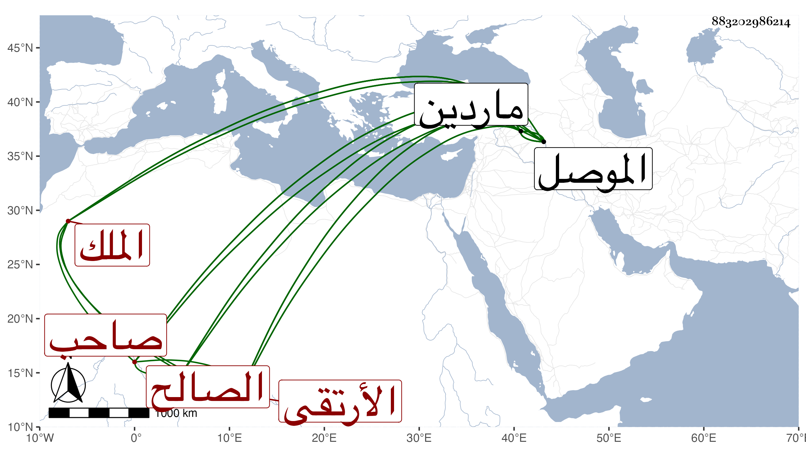

0902Sakhawi.DawLamic.ITO20230111-ara1.EIS1600.883202986214
Biography ID: 883202986214
أحمد بن اسكندر بن صالح بن غازي بن قرا أرسلان بن أرتق بن أرسلان ابن ايلغازي بن البي بن تمرباش بن اليلغازي بن أرتق الملك الصالح شهاب الدين الأرتقي صاحب ماردين . نشأ في دولة ابن عمه الظاهر مجد الدين عيسى بن المظفر واختص به وززوجه ابنته واستخلفه على ماردين غير مرة وآل أمره إلى أن رغب عنها لقرا يوسف بن قرا محمد بعشرة آلاف دينار وألف فرس وعشرة آلاف رأس غنم وزوجه ابنته وأعطاه الموصل فتوجه إليها فلم يقم سوى ثلاثة أيام . ومات هو والزوجة المشار إليها في سنة إحدى عشرة ويقال أن قرا يوسف سمه وخلف أربعة أولاد محمد وأحمد ومحمود وعلي فأخرجهم قرا يوسف من الموصل وهو آخر الملوك من بني أرتق وماردين ، وقد طول المقريزي في عقوده ترجمته .
